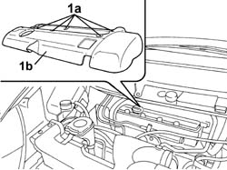

1016A40 IGNITION COIL COVER ON CYLINDER HEAD- R+R
- Path
- Procedures > 10 ENGINE > 1016 CYLINDER HEAD/S > 1016A CAM COVERS > 1016A40 IGNITION COIL COVER ON CYLINDER HEAD- R+R
- Kind
- repair procedure (removal / refitting; the operation number is the code)
- Applies to
- engines: 2.0 16v; all production periods
- Interactive page
- https://sloeber94.github.io/elrnDB-fUlss/en/#/179006873
Applies to: engines: 2.0 16v; all production periods
 Removing
Removing
 Refitting
RefittingOp. 5010B18 CLIMATE CONTROL UNIT AIR INTAKE - R.R.
- Turn the fastening pins (1a) through 90° and remove coil cover (1b).

Applies to: engines: 2.0 16v; all production periods
Refitting
Removing- Fit the coil cover in its seat and turn the fastening pins through 90°.